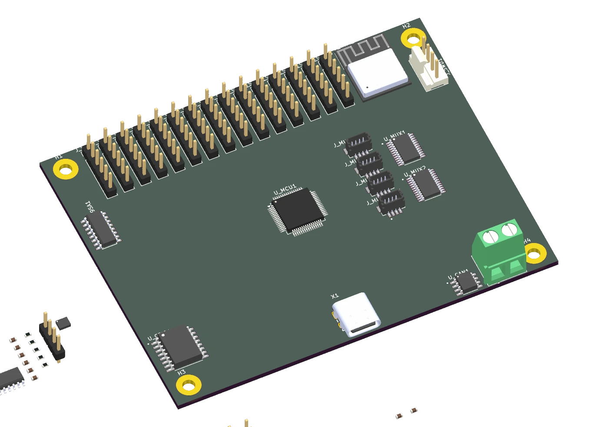

ELECTRONICS / HARDWARE ARCHITECTURE
A platform for
building robots.
An integrated robotics carrier platform that brings motor control, sensor interfaces and wireless connectivity into one planned architecture, reducing the need for separate breakout boards and ad hoc wiring.

01 / THE CHALLENGE
Start with the system.
Robot prototypes quickly accumulate motor drivers, sensor breakouts, communications modules and wiring. RoboDev explores a more integrated foundation: a robotics carrier architecture with dedicated real-time control and a separate wireless processor.
The documented design pairs an STM32G431 with an ESP32-C3, connected over SPI. Motor control and real-time I/O sit on the STM32 side; the wireless co-processor handles connectivity.
02 / ENGINEERING DECISIONS
The thinking behind the build.
Separate real-time control from connectivity
The two-MCU architecture divides time-sensitive motor and I/O work from wireless communication. The interface between processors is an explicit part of the system design.
Plan for several actuator types
The architecture includes four DRV8874 DC motor channels, two TMC2209 stepper channels and a PCA9685 for 16 servo outputs. These are design capabilities rather than measured operating results.
Make sensor expansion deliberate
Two TCA9548A multiplexers provide 16 isolated I²C bus segments in the design. Identical-address devices can be assigned separate segments, with a mix of QWIIC and conventional headers.
Keep power and interfaces visible
Separate motor and stepper rails, a 5 V rail and 3.3 V logic supply are documented alongside reverse-polarity protection. Hierarchical KiCad sheets keep the interconnect and each functional block reviewable.
03 / A CLOSER LOOK
From the project workspace.
Explore the design and analysis assets. Select an image to view the detail.
04 / OUTCOME & LEARNING
What the work revealed.
The project contains hierarchical KiCad schematics and board design files covering signals, actuators and power. The image shown here was generated directly from the signals board file.
Development status: schematic and PCB design work is in progress. The project documentation records no fabricated PCB or completed bring-up. Routing, design review, assembly and firmware validation remain steps toward proving the planned capabilities.
Explore the collaborative repository ↗
A useful board starts with a clear architecture.
The interesting work is deciding how power, control, communication and expansion fit together, then making those decisions inspectable before manufacturing.
05 / CONTEXT & CREDITS
The people and the tools.
Collaborative open hardware · alexbnz-1/RoboDev. The architecture and planned capabilities are drawn from the shared repository documentation. The PCB visualisation was generated directly from the current KiCad signals board design.